如何申请域名
-
1.首先，先登录阿里云 https://www.aliyun.com ，注册登录自己的账密。
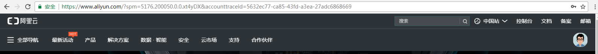 -
2.鼠标移到 “全部导航”---》“产品”---》“域名与网站”--》（点击）“域名注册”
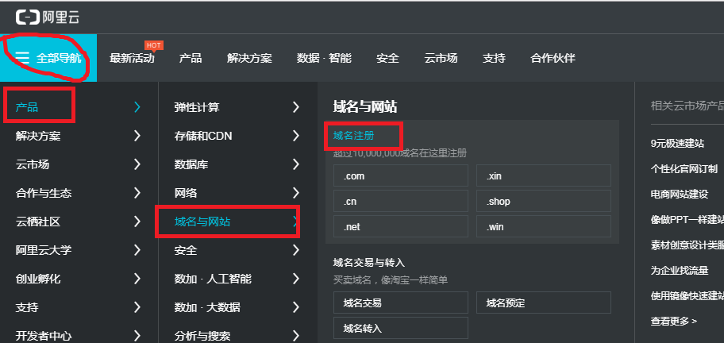 -
3.搜索栏输入决定好的域名，如我的：lipeifeng，然后点击“查域名” 。
弹出新页面，可以根据你的个人爱好及经济实力选择后缀名：（我的是lipeifeng.top）,
然后点击“加入清单”--》“去结算” 。
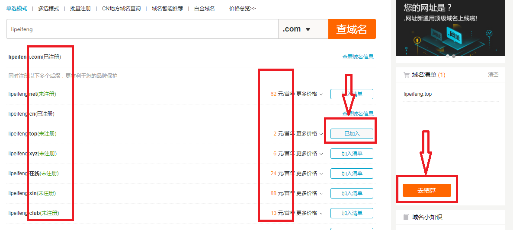
-
4.选择 “个人”、“创建信息模板”（填信息）、“免费开启”、“立即购买” --》付款
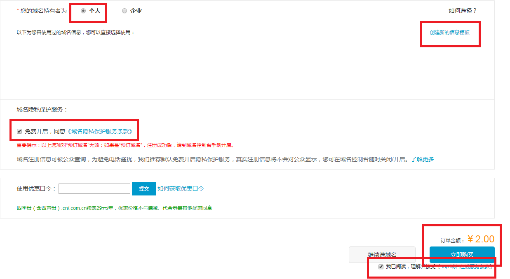 -
5.回到首页，点击“控制台”，跳转新页面，可查看域名具体信息，
以及对新申请的域名进行实名认证，等待审核，大概3-5天
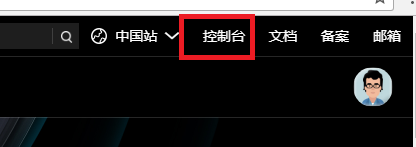 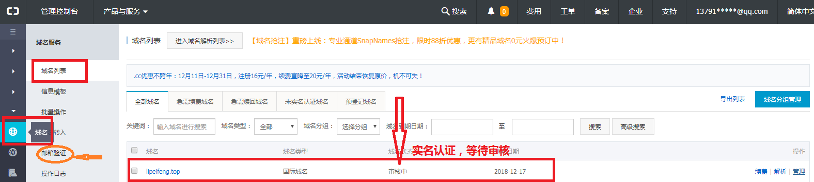 -
6.当审核通过后，“域名状态”一栏会显示“正常”，即可点击“解析”，
跳转出新页面---》点击“添加解析”，弹出窗口填写信息
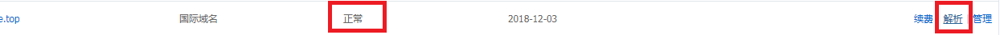
“添加解析”信息填写：
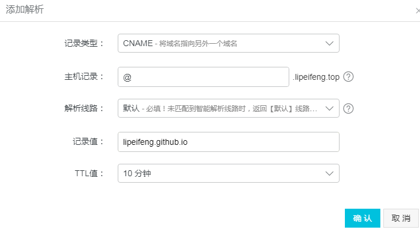
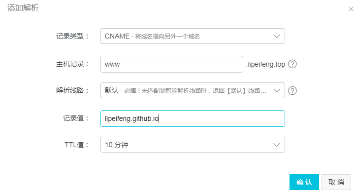
（1）“记录类型”：
选择“CNAME”：将域名指向另外一个域名
（2）“主机记录”可填 “www”表示以www.域名
或者填“@”表示 直接解析 主域名
（3）“解析线路”---》默认
（4）“记录值”：
我们是要与github项目绑定，直接把github上的项目名复制过来
/***
如果“记录类型”是“A”,
则需要cmd $ping “github上的项目名”(无需引号)，
得到ip值填写到“记录值”
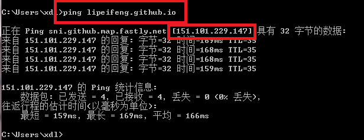
同样，如果你的域名通过了，也可ping查看
**/
（5）“TTL值”：10分钟 即可
设置后点击确认按钮：
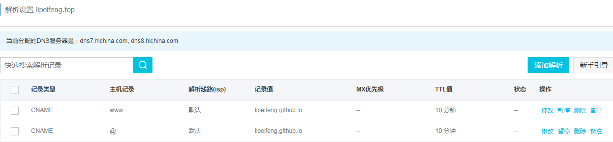
------->>本·文·完